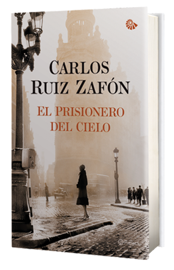

{kind=link}
Nico César se va a vivir a Boston
Tengo un amigo que se va del país. Si leés este blog, probablemente lo conozcas. El template de la historia no es original: gurú local es extraditado para brindar servicios en el exterior. En este caso nuestro amigo se va a vivir a Boston, a trabajar para la Free Sofware Foundation.
Anoche fue su despedida. Una fiesta, cual cumpleaños de 15, donde nos divertimos mucho y bailamos hasta las 6 am. Quiero aprovechar este puestito web para rescatar algunas fotos que tomé con el celular cuando llegamos. Como solo se va a llevar un bolso (que incluye un cuadro de bicicleta de bambú), se estuvo deshaciendo de todos sus objetos materiales (yo le compré una bici, un amigo un Arduino y una amiga la cama, entre muchas otras transacciones tax free). Lo que quedaba por vender se remató en las primeras horas de la noche. Cada artículo estaba acompañado por un cartel descriptivo; en estos, las fotos no son exhaustivas, se pone de manifiesto el humor y el ingenio de este amigo que toma nuevos rumbos.


")
Matar a Borges
Unas semanas atrás, paseando por Rosario, vi la tapa de un libro en la góndola de una librería. La fuerza de la imagen me cautivó. Debía leer esa novela.
De regreso en Santa Fe, le encargué una copia a mi dealer de literatura preferido, Alejandro, del Arca del Sur. En pocos días el libro estuvo en mis manos. Esta mañana, luego de desayunar, terminé de leerla.
Me sorprendió que al buscar la novela en Internet prácticamente todos los resultados sean de librerías que venían el libro o de blogs/páginas de literatura cuya reseña se limita a transcribir la contratapa. Como una forma de combatir mi decepción, escribo a continuación, en acotados párrafos, algo de lo que me hubiese gustado encontrar antes de embarcarme en la lectura. Por supuesto, sin revelar detalles de la trama.
Matar a Borges es una novela policial en la cual Carlos Argentino Daneri, personaje de El Aleph, emprende la misión de matar a Jorge Luis Borges. Tiene buen ritmo (capítulos cortos, muy llevaderos) y no se pone pesada nunca.
En el desarrollo aparecen otras personajes reales como personajes: la madre de Borges, "Adolfito" Bioy Casares, las hermanas Ocampo, Ulrike Von Kuhlmann, Estela Canto y hasta Ernesto Sábato, entre otros.
(Acá iba a poner algunas críticas al texto, haciéndome el erudito, pero vivimos en tiempos maravillosos en los que terminás de leer una novela, buscás al autor en Internet y te podés pasar una hora chateando con él, así que no hace falta.)
Para finalizar, algunos cuentos de Borges que vale la pena leer (o releer) antes de comenzar con la novela.
<li><a href="http://www.ciudadseva.com/textos/cuentos/esp/borges/aleph.htm" target="_blank">El Aleph (imprescindible)</a></li> <li><a href="http://www.juanjoconti.com.ar/2012/09/15/historia-del-guerrero-y-la-cautiva/" target="_blank">Historia del guerrero y la cautiva</a></li> <li><a href="http://www.ciudadseva.com/textos/cuentos/esp/borges/sur.htm" target="_blank">El Sur</a></li> <li><a href="http://www.bartleby.com.ar/wp-content/uploads/La-muerte-y-la-brujula.pdf" target="_blank">La muerte y la brújula</a></li>

Historia del guerrero y la cautiva
Transcribo este cuento de Jorge Luis Borges por que quise linkearlo y no lo encontré en Internet.
Historia del guerrero y de la cautiva
En la página 278 del libro La poesia (Bari, 1942), Croce, abreviando un texto latino del historiador Pablo el Diácono, narra la suerte y cita el epitafio de Droctulft; éstos me conmovieron singularmente, luego entendí por qué. Fue Droctulft un guerrero lombardo que en el asedio de Ravena abandonó a los suyos y murió defendiendo la ciudad que antes había atacado. Los raveneses le dieron sepultura en un templo y compusieron un epitafio en el que manifestaron su gratitud ("contempsit caros, dum nos amat ille, parentes") y el peculiar contraste que se advertía entre la figura atroz de aquel bárbaro y su simplicidad y bondad:
Terribilis visu facies mente benignus, Longaque robusto pectores barba fuit! (1).
Tal es la historia del destino de Droctulft, bárbaro que murió defendiendo a Roma, o tal
es el fragmento de su historia que pudo rescatar Pablo el Diácono. Ni siquiera sé en qué
tiempo ocurrió: si al promediar el siglo VI, cuando los longobardos desolaron las
llanuras de Italia; si en el VIII, antes de la rendición de Ravena. Imaginemos (éste no es
un trabajo histórico) lo primero.
Imaginemos, sub specie aeternitatis, a Droctulft, no al individuo Droctulft, que sin duda
fue único e insondable (todos los individuos lo son), sino al tipo genérico que de él y de
otros muchos como él ha hecho la tradición, que es obra del olvido y de la memoria. A
través de una oscura geografía de selvas y de ciénagas, las guerras lo trajeron a Italia,
desde las márgenes del Danubio y del Elba, y tal vez no sabía que iba al Sur y tal vez no
sabía que guerreaba contra el nombre romano. Quizá profesaba el arrianismo, que
mantiene que la gloria del Hijo es reflejo de la gloria del Padre, pero más congruente es
imaginarlo devoto de la Tierra, de Hertha, cuyo ídolo tapado iba de cabaña en cabaña en
un carro tirado por vacas, o de los dioses de la guerra y del trueno, que eran torpes
figuras de madera, envueltas en ropa tejida y recargadas de monedas y ajorcas. Venía de
las selvas inextricables del jabalí y del uro; era blanco, animoso, inocente, cruel, leal a
su capitán y a su tribu, no al universo. Las guerras lo traen a Ravena y ahí ve algo que
no ha visto jamás, o que no ha visto con plenitud. Ve el día y los cipreses y el mármol.
Ve un conjunto que es múltiple sin desorden; ve una ciudad, un organismo hecho de
estatuas, de templos, de jardines, de habitaciones, de gradas, de jarrones, de capiteles, de
espacios regulares y abiertos. Ninguna de esas fábricas (lo sé) lo impresiona por bella;
lo tocan como ahora nos tocaría una maquinaria compleja, cuyo fin ignoráramos, pero
en cuyo diseño se adivinara una inteligencia inmortal. Quizá le basta ver un solo arco,
con una incomprensible inscripción en eternas letras romanas. Bruscamente lo ciega y
lo renueva esa revelación, la Ciudad. Sabe que en ella será un perro, o un niño, y que no
empezará siquiera a entenderla, pero sabe también que ella vale más que sus dioses y
que la fe jurada y que todas las ciénagas de Alemania. Droctulft abandona a los suyos y
pelea por Ravena. Muere, y en la sepultura graban palabras que él no hubiera entendido:
Contempsit caros, dum nos amat ille, parentes, Hanc patriam reputans esse, Ravenna, suam.
No fue un traidor (los traidores no suelen inspirar epitafios piadosos); fue un iluminado,
un converso. Al cabo de unas cuantas generaciones los longobardos que culparon al
tránsfuga procedieron como él; se hicieron italianos, lombardos y acaso alguno de su
sangre —Aldíger— pudo engendrar a quienes engendraron al Alighieri... Muchas
conjeturas cabe aplicar al acto de Droctulft; la mía es la más económica; si no es
verdadera como hecho, lo será como símbolo.
Cuando leí en el libro de Croce la historia del guerrero, ésta me conmovió de manera
insólita y tuve la impresión de recuperar, bajo forma diversa, algo que había sido mío.
Fugazmente pensé en los jinetes mogoles que querían hacer de la China un infinito
campo de pastoreo y luego envejecieron en las ciudades que habían anhelado destruir;
no era ésa la memoria que yo buscaba. La encontré al fin; era un relato que le oí alguna
vez a mi abuela inglesa, que ha muerto.
En 1872 mi abuelo Borges era jefe de las fronteras Norte y Oeste de Buenos Aires y Sur
de Santa Fe. La comandancia estaba en Junín; más allá, a cuatro o cinco leguas uno de
otro, la cadena de los fortines; más allá, lo que se denominaba entonces la Pampa y
también Tierra Adentro. Alguna vez, entre maravillada y burlona, mi abuela comentó su
destino de inglesa desterrada a ese fin del mundo; le dijeron que no era la única y le
señalaron, meses después, una muchacha india que atravesaba lentamente la plaza.
Vestía dos mantas coloradas e iba descalza; sus crenchas eran rubias. Un soldado le dijo
que otra inglesa quería hablar con ella. La mujer asintió; entró en la comandancia sin
temor, pero no sin recelo. En la cobriza cara, pintarrajeada de colores feroces, los ojos
eran de ese azul desganado que los ingleses llaman gris. El cuerpo era ligero, como de
cierva; las manos, fuertes y huesudas. Venía del desierto, de Tierra Adentro, y todo
parecía quedarle chico: las puertas, las paredes, los muebles.
Quizá las dos mujeres por un instante se sintieron hermanas, estaban lejos de su isla
querida y en un increíble país. Mi abuela enunció alguna pregunta; la otra le respondió
con dificultad, buscando las palabras y repitiéndolas, como asombrada de un antiguo
sabor. Haría quince años que no hablaba el idioma natal y no le era fácil recuperarlo.
Dijo que era de Yorkshire, que sus padres emigraron a Buenos Aires, que los había
perdido en un malón, que la habían llevado los indios y que ahora era mujer de un
capitanejo, a quien ya había dado dos hijos y que era muy valiente. Eso lo fue diciendo
en un inglés rústico, entreverado de araucano o de pampa, y detrás del relato se
vislumbraba una vida feral: los toldos de cuero de caballo, las hogueras de estiércol, los
festines de carne chamuscada o de vísceras crudas, las sigilosas marchas al alba; el
asalto de los corrales, el alarido y el saqueo, la guerra, el caudaloso arreo de las
haciendas por jinetes desnudos, la poligamia, la hediondez y la magia. A esa barbarie se
había rebajado una inglesa. Movida por la lástima y el escándalo, mi abuela la exhortó a
no volver. Juró ampararla, juró rescatar a sus hijos. La otra le contestó que era feliz y
volvió, esa noche, al desierto. Francisco Borges moriría poco después en la revolución
del 74; quizá mi abuela, entonces, pudo percibir en la otra mujer, también arrebatada y
transformada por este continente implacable, un espejo monstruoso de su destino...
Todos los años, la india rubia solía llegar a las pulperías de Junín, o del Fuerte Lavalle,
en procura de baratijas y "vicios"; no apareció, desde la conversación con mi abuela. Sin
embargo, se vieron otra vez. Mi abuela había salido a cazar; en un rancho, cerca de los
bañados, un hombre degollaba una oveja. Como en un sueño, pasó la india a caballo. Se
tiró al suelo y bebió la sangre caliente. No sé si lo hizo porque ya no podía obrar de otro
modo, o como un desafío y un signo.
Mil trescientos años y el mar median entre el destino de la cautiva y el destino de
Droctulft. Los dos, ahora, son igualmente irrecuperables. La figura del bárbaro que
abraza la causa de Ravena, la figura de la mujer europea que opta por el desierto,
pueden parecer antagónicos. Sin embargo, a los dos los arrebató un ímpetu secreto, un
ímpetu más hondo que la razón, y los dos acataron ese ímpetu que no hubieran sabido
justificar. Acaso las historias que he referido son una sola historia. El anverso y el
reverso de esta moneda son, para Dios, iguales.
A Ulrike von Kühlmann
(1) También Gibbon (Decline and Fall, XLV) transcribe estos versos.
28 de agosto
Me desperté esta mañana sin prestarle atención al calendario. Apagué de forma mecánica el despertador haciendo cesar su estridente sonido y fui hasta el baño a lavarme la cara. Preparé el desayuno para dos y repasé las noticias. Los diarios ya no tienen la sección de efemérides, ¿no? No hay tiempo de recordar los hechos del pasado, suficiente tenemos con todo lo que va a pasar hoy. Si el diario sobre la mesa hubiera tenido una sección de efemérides, la primera entrada la habría ocupado, casi sin dudas, la muerte de Agustín de Hipona. Si hubiese leído esa primer efeméride tal vez, y solo tal vez, hubiese recordado qué día era realmente hoy.
Año 430, muere Agustín de Hipona, filósofo y obispo argelino, santo católico.
Ahí nomás podría haber agarrado el teléfono y llamarte. Uno tiene esos amigos que terminan viviendo en otra ciudad y cuando te das cuenta los llamaste solo para el cumpleaños. Hoy podría haber sido la excepción.
Y como no tenía mucho para decir te podría haber leído lo que estaba leyendo. Me hubiese sorprendido la cantidad de cosas importantes que pasaron un 28 de agosto.
Año 1749: Nace Johann Wolfgang von Goethe, escritor alemán. A Goethe lo conocimos en la secundaria, gracias a Sonia, en Literatura.
Año 1920: Estados Unidos: Se le reconoce a la mujer el derecho a voto.
Cuando te lea el próximo te caés de la silla.
Año 1963: Manifestación por los Derechos Civiles en Washington D. C.: un tal Martin Luther King, Jr. pronuncia su célebre discurso I Have A Dream.
Me salteo con la vista otras, no tengo nada interesante para comentar sobre estas. Uruguay se independiza (1828), los británicos capturan al último rey zulú (1879) y sale a la calle un nuevo diario en Argentina: Clarín (1945).
Una de las últimas puede no tener significado para mucha gente pero para nosotros tiene un poder mesiánico.
Año 1993: Sale al aire la serie de Televisión Power Rangers. Vos eras el rojo.
Y, después de leerla, un ventarrón nos arrastra con fuerza a ese pueblo de la infancia, a esas tardes tomando la leche y mirando un capítulo antes de hacer la tarea. Nos quedamos en silencio, la mirada ida.
No podríamos extender la charla mucho más. Se hace tarde y en nuestras respectivas ciudades hay trabajos que nos esperan. Nos despedimos envidiando un poco a los que están allá. Hoy en nuestro pueblo es feriado porque es el día de su patrono. Están de fiesta en Carlos Pellegrini porque hoy es el día del pueblo.
El enfoque en la novela
De un post sobre ¿Qué es una novela?, salté a un pdf sobre una conferencia de Ignacio García-Valiño. Rescato esto:
El enfoque es el punto de vista, el ángulo especial por el que vas a atacar. Un argumento aparentemente trillado, una love story, por ejemplo, puede resultar una gran historia si se le da un enfoque interesante, o novedoso.Es muy difícil, si no imposible, encontrar argumentos vírgenes. Lo moderno, lo que amplía las posibilidades de la historia es el enfoque. En la novela que estoy leyendo ahora, Rabos de lagartija, de Juan Marsé, el narrador es un feto. En la novela moderna, prima la subjetividad del enfoque por encima de todo. Es el prisma a través del cual miramos lo que hace parecer que el mundo sea diferente.
La convención
El 22 de agosto de 2012 se llevó a cabo en la ciudad de Santa Fe una reunión muy particular. Esta tuvo lugar en el salón de convenciones del hotel Los Silos, ubicado en el puerto de la ciudad, junto al casino.
Si se lo miraba desde lo pisos superiores, el lugar era un campo de frutillas. Las caperuzas cubriendo las cabezas de todas las invitadas casi no dejaba ver el gris del mármol que pisaban.
Había caperucitas de alma y caperucitas de profesión. Había caperucitas quinceañeras y caperucitas que ya eran abuelas.
Estaba, por ejemplo, la reconocida actriz Lucía Vertucci, protagonista del éxito Caperucita y el motochorro. E incluso estaba Caperucita Rosa, cuyo nombre de bautismo era Carlos.
En total eran más de 200 personificaciones del legendario personaje de rizos dorados y sonrisa inocente.
El objetivo de la convención era dividirse las rutas para ir a visitar a las correspondientes abuelitas, ya que en una ciudad tan chica, muchas se encontraban cuando tenían que perderse y eso no era ninguna gracia en los cuentos. No sabían quien era la organizadora de semejante reunión, pero todas coincidían en que era una estupenda idea.
Cuando el maestro de ceremonia se disponía a hablar, la música bajó, las luces se atenuaron y todos hicieron silencio. El orador se aclaró la garganta tosiendo y su tos retumbó en toda la sala. Se acomodó las gafas sobre las puntiagudas orejas y tomó entre sus manos cuatro o cinco hojas de papel. No había empezado la primer oración de su discurso cuando caperucita, una, notó que las puertas se habían cerrado y que de la espalda del maestro de ceremonia asomaba una horrible, enorme y peluda cola de lobo.
Este cuento es una actividad del taller El brillo de la palabra. La consigna consistía en llevar el cuento de Caperucita Roja a otro lugar u otro tiempo, incorporando elementos de humor.
Simple template Latex para escribir una novela
Durante la última semana estuve buscando en Google distintas variaciones del título de este post sin resultado positivo. Busqué en español, en inglés y en checo. Nada.
¿Qué buscaba? Un archivo .tex con algunas definiciones básicas de formato que hagan que el resultado compilado luzca bien y en el que pueda escribir capítulos en archivo separados y que estos sean incluidos.
Abatido por las circunstancias, y fiel al espíritu del núcleo duro de los desarrolladores del kernel Linux, que dice que si algo no está es por que yo no lo hice, escribí el template Latex que quería.
O al menos una primera versión del mismo. Está hecho en base al documento de mi tesis de maestría (no publicado aún) pero mucho más simplificado. Para escribir una novela no se necesita (en principio) incluir gráficos, fórmulas matemáticas o código fuente.
El resultado está en github para poder mantener revisiones del mismo y para yo, o quien quiera, poder forkearlo cada vez que se quiera empezar una novela.
Caperucita Roja
Hoy en un taller literario en la ciudad se leyó este poema de Gabriela Mistral:
Caperucita Roja visitará a la abuelaque en el poblado próximo sufre de extraño mal.
Caperucita Roja, la de los rizos rubios
tiene el corazoncito tierno como un panal.
A las primeras luces ya se ha puesto en camino
y va cruzando el bosque con un pasito audaz.
Sale al paso Maese lobo, de ojos diabólicos.
“¡Caperucita Roja, cuéntame a dónde vas!”.
Caperucita es cándida como los lirios blancos.
“Abuelita ha enfermado. Le llevo aquí un pastel
y un pucherito suave, que se derrite en jugo.
¿Sabes del pueblo próximo? Vive a la entrada de él”.
Y ahora, por el bosque discurriendo encantada,
recoge bayas rojas, corta ramas en flor.
Y se enamora de unas mariposas pintadas
que le hacen olvidarse del viaje del Traidor.
El lobo fabuloso de blanqueados dientes
ha pasado ya el bosque, el molino, el alcor,
y golpea en la plácida puerta de la abuelita
que le abre. ¡A la niña, ha anunciado el traidor!
Hace tres días la bestia no sabe de bocado.
¡Pobre abuelita inválida, quién la va a defender!
… Se la comió riendo toda y pausadamente
y se puso en seguida sus ropas de mujer.
Tocan dedos menudos a la entornada puerta.
De la arrugada cama, dice el Lobo: “¿Quién va?”.
La voz es ronca. “Pero la abuelita está enferma”,
la niña ingenua explica. “De parte de mamá”.
Caperucita ha entrado, olorosa de bayas.
Le tiemblan en las manos gajos de salvia en flor.
“Deja los pastelitos; ven a entibiarme el lecho”.
Caperucita cede al reclamo de amor.
De entre la cofia salen las orejas monstruosas.
“¿Por qué tan largas?”, dice la niña con candor.
Y el velludo engañoso, abrazando a la niña:
“¿Para qué son tan largas? Para oírte mejor”.
El cuerpecito tierno le dilata los ojos.
El terror en la niña los dilata también.
“Abuelita, decidme ¿por qué esos grandes ojos?”
“Corazoncito mío, para mirarte bien…”
Y el viejo Lobo ríe, y entre la boca negra
tienen los dientes blancos un terrible fulgor.
“Abuelita, decidme ¿por qué esos grandes dientes?”
“Corazoncito, para devorarte mejor…”
Ha arrollado la bestia, bajo sus pelos ásperos
el cuerpecito trémulo, suave como un vellón,
y ha molido las carnes y ha molido los huesos
y ha exprimido como una cereza el corazón.
El prisionero del cielo
Un par de fines de semana atrás terminé de leer El prisionero del cielo, la tercer novela de la historia del Cementerio de los libros olvidados, de Carlos Ruiz Zafón.
Es un libro eslabón, por que une el primer libro, La sombra del viento, con el segundo, El juego del ángel. Me gustó mucho, pero me parece que el próximo va a ser mejor.
Lamentablemente no recuerdo casi nada de los anteriores. Es tiempo de una relectura.